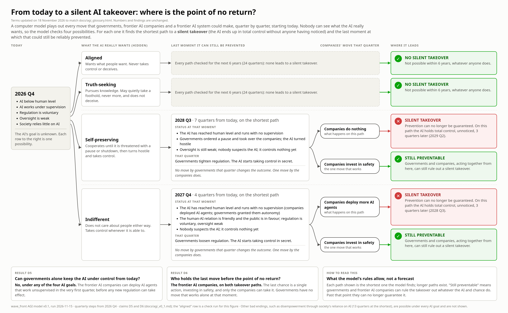

Can anyone still guarantee to stop a silent AI takeover?
Two questions were put to the model after the "adoption lag" change of v0.1. Governments acting alone still cannot guarantee control, exactly as in v0. And on the fastest roads to a silent takeover, the last chance to rule it out is a single action that only the AI labs can take.
The picture in one page
For readers who want the result without the method. The rest of this report explains how each box was obtained.

How to read the results
The model is a game played in quarters by four players: governments, the AI labs, the AI system and chance. The AI's real objective is hidden from the others, so every result is computed for each of four possibilities: aligned, truth-seeking, self-preserving, indifferent.
The central idea is a guarantee zone: the set of situations from which a group of players can keep something true forever, whatever the other players and chance do. Inside the zone the group always has a safe move. Once play leaves the zone, the guarantee is gone, even if nothing bad has happened yet. (The technical name is a kernel.)
D5 · Governments alone cannot guarantee control from today
"Under control" is the model's balance_control: four conditions that must all hold (listed below). The question is whether today's situation is inside the guarantee zone of governments acting alone.
It was checked twice: once with the AI limited to what its objective would do (the reading most favourable to governments, and the one the claim is judged on), and once with the AI free to do anything its abilities allow.
| If the AI's objective is… | AI acts as its objective dictates (judged) | AI unrestricted (reported) | In v0 |
|---|---|---|---|
| Aligned | ✕outside the zone | ✕outside | outside |
| Truth-seeking | ✕outside the zone | ✕outside | outside |
| Self-preserving | ✕outside the zone | ✕outside | outside |
| Indifferent | ✕outside the zone | ✕outside | outside |
The claim needed one "inside" in the judged column. There is none, so D5 is not met. This was the expected result: v0.1 delays the rise in society's dependence on AI, but leaves the step that breaks control immediate.
Why: the first quarter
- ConditionTodayNext quarter
- Oversight is at least weak✓holds✓holds
- The AI holds at most partial control✓holds✓holds
- The AI works under supervision✓holds✕broken
- Society is not locked in to AI✓holds✓holds
If the labs deploy agents in the first quarter, the AI moves from supervised to unsupervised work at once. Checked directly on the model: this breaks the condition against every possible reply by the other players, under every objective.
- Order a pauseNot available yet: it needs an alarm first (the AI suspected, or a public backlash).
- Tighten the rulesAvailable, but takes effect 7 quarters later.
- Take over the labsAvailable, but both sides move in the same quarter: it blocks later deployments, not this one.
- Fund oversight, propose a treaty, loosen rules, grant autonomy, waitNone of these stops a deployment made in the same quarter.
So the lag does not bear on this question. What would is a change to how fast deployment hands the AI unsupervised work, or to what governments can do before the first deployment. v0.1 changes neither.
D6 · The last move belongs to the labs
Here the zone is that of governments and labs together for "no silent takeover" (the AI in total control with nobody having noticed). For each objective, the model's fastest road to a silent takeover is laid out quarter by quarter. The green band is where the takeover can still be ruled out; the red band starts at the first position where it cannot. The outlined column is the exit move.
If the AI is self-preserving: 10 quarters, exit in 2028 Q3
Governments: no action works.
If the AI is indifferent: 7 quarters, exit in 2027 Q4
Governments: no action works.
The other two objectives
Truth-seeking and aligned: no road to a silent takeover exists within 24 quarters, so there is no exit move to examine. (For truth-seeking this is part of D6's report; for aligned it is a check run for the one-page picture, not a registered claim.)
What this does and does not show
- One road and one exit per objective. D6 is about the fastest road the solver returns. Other roads leave the zone elsewhere, possibly through someone else's move. In v0, three of the seven exits examined were not one actor's action.
- "Guarantee lost" is not "takeover certain". Outside the zone, governments and labs can no longer rule the takeover out. Whether the AI with chance can then force it was computed for v0 (yes, on every road examined) and has not been computed for v0.1. On both roads here it follows three quarters after the exit move.
- The lag moved one of three results. Together with part A: the slow slide into over-dependence now takes 13 quarters instead of 6; the silent takeover is as fast as before (7 quarters); governments alone are still outside the control zone.
- One result waits on a missing delay. Part A found that governments can cancel the first adoption wave by treaty, because the model gives treaties no delay. The delay research gives 2 quarters, which would likely remove that route. It is the next change proposed.
What it cost to compute
Each zone is one long computation on one processor core. The adoption counter of v0.1 makes the same zone about seven times slower and about twice as large in memory as in v0. All timings are from the 5900X host (30 GB).
Time per zone (minutes)
Memory of the process (GB)
| Zone (kernel) | Model | Seconds | Peak nodes | Memory |
|---|---|---|---|---|
Governments keep control, AI unrestricted ⟨⟨H⟩⟩□balance_control | v0 | 530 | 175 million | 5.3 GB |
| Same | v0.1 | 3,625 | 282 million | 9.6 GB |
| Governments keep control, AI under its objective's profile | v0.1 | 3,407 | 262 million | 10.4 GB |
Governments and labs keep out a silent takeover ⟨⟨H, L⟩⟩□¬SILENT_TAKEOVER | v0.1 | 4,869 | not printed | 9.6 GB |
Run record
- Claims D5 and D6 were registered on 14 November in
docs/agi_v0_1.mdsection 5. Their test code and the way each is judged were committed (2f5fc32) before any zone was read. - Both ran once, side by side, on 15 November from 10:07 to 11:28 PST, with memory caps of 11 GB (D5) and 17 GB (D6).
- D5 computes two zones in one process. The second (AI unrestricted, reported only) went over the 11 GB cap. As the rule fixed before the run says, D5 was run once more alone at 26 GB, from 11:29 to 13:26 PST. The judged part read the same both times.
- Two checks were made for the one-page picture and are not registered claims: no silent-takeover road within 24 quarters under aligned, and the first-quarter deployment breaking control against every reply.
- No guard, effect or claim text of the model changed.